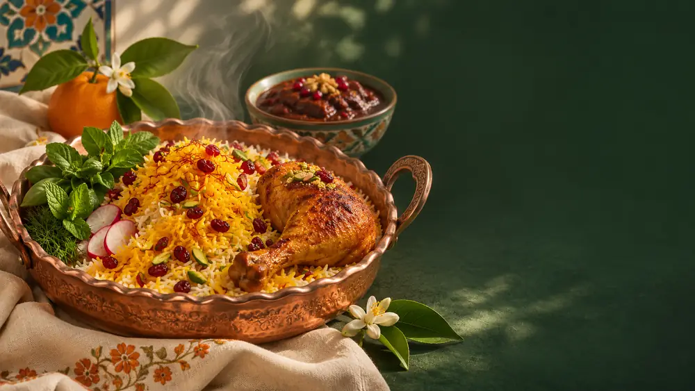
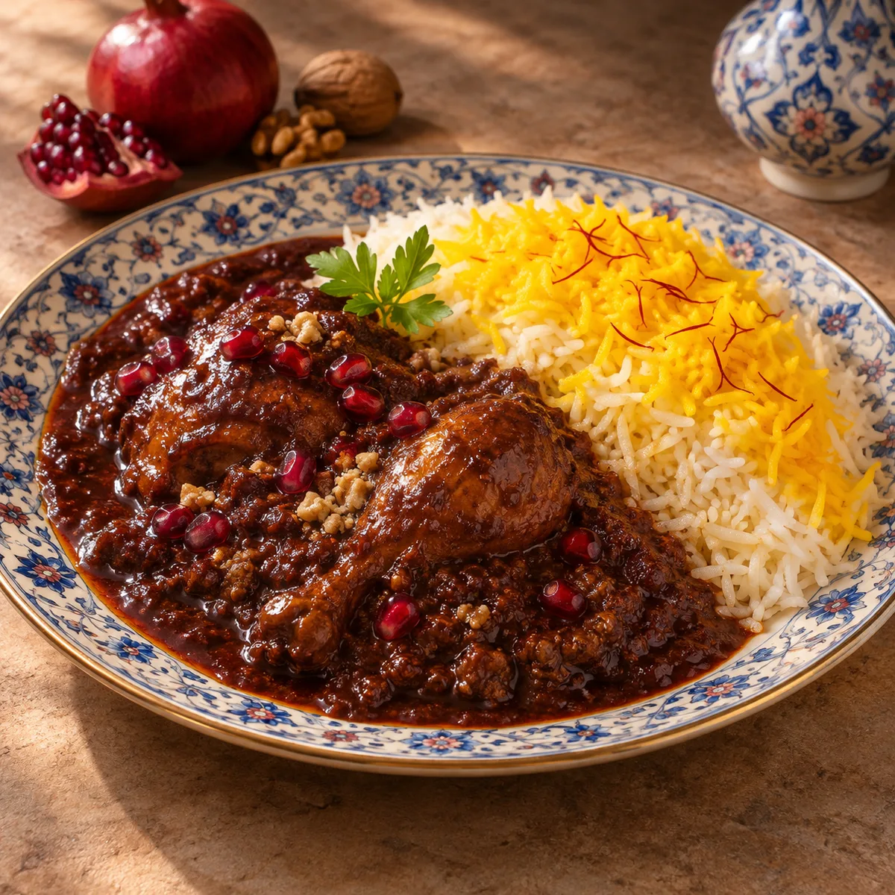
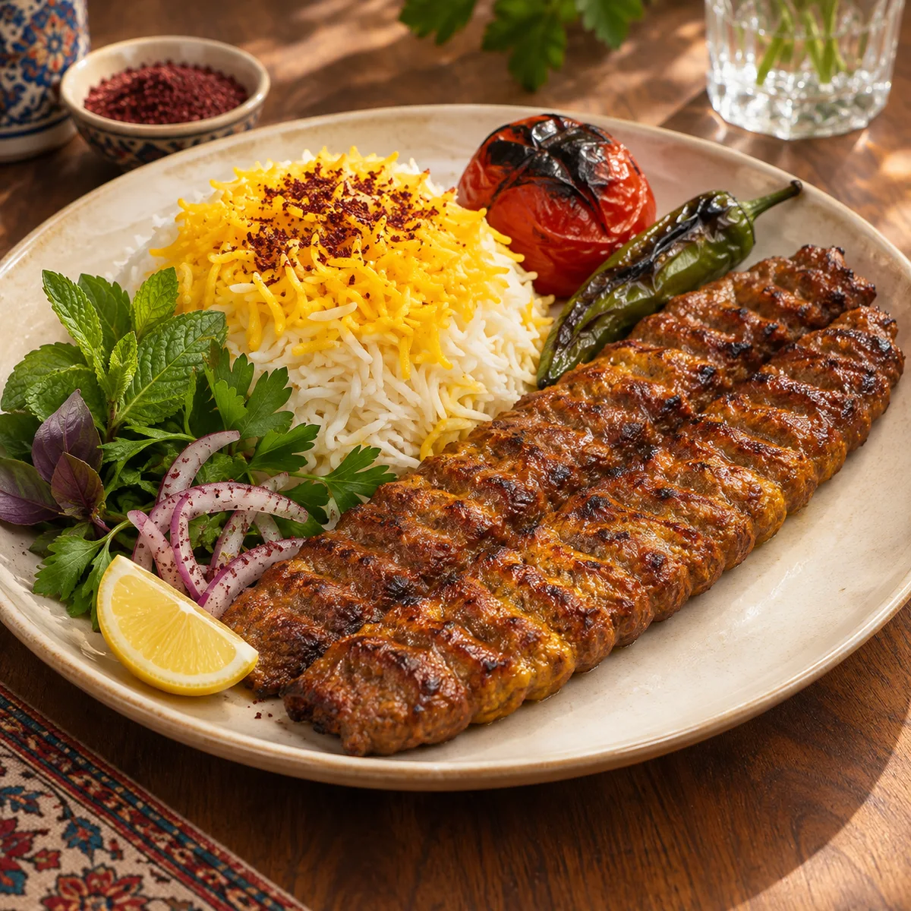

۰۱پیشنهاد سفره
زرشکپلو با مرغ
رنگِ زرشک، عطرِ زعفران و طعمی آشنا.

از عطر زعفران تا گرمای یک دورهمی؛ نارنج روایتِ لحظههاییست که دور یک سفره شکل میگیرند.
اصالت در طعم ✳ ظرافت در روایت
یک میز، هزار روایت
بعضی لحظهها با عطر یک غذا در خاطر میمانند.
برای ما، سفره ایرانی چیزی فراتر از مجموعهای از غذاهاست؛ فرصتی برای مکث، گفتوگو و شریکشدن در یک حال خوب. نارنج از همین حس آشنا الهام میگیرد؛ با نگاهی امروزی به رنگها، طعمها و آیین میزبانی.
داستان نارنج را بخوانید

آشنایی که هر بار تازه است
سه قاب از طعمهای آشنای ایرانی؛ از خورشهای جاافتاده تا عطر زعفران و آتش.

۰۱رنگِ زرشک، عطرِ زعفران و طعمی آشنا.

۰۲قصهای آرام از گردو، انار و صبر.

۰۳عطر آتش و زعفران، کنار هم.
غذاها و تصاویر، نمونههای نمایشی برای معرفی سبک منو هستند.
مشاهده منوی کامل
03 / THE EXPERIENCE
یک میز، چند صندلی، گفتوگویی که طول میکشد و طعمی که میماند.
حالوهوای نارنجحالوهوای نارنج
از نور روی میز تا عطر غذا؛ چیزهای کوچکی که یک دیدار را متفاوت میکنند.


گاهی بهترین بخشِ یک وعده،
آدمهایی هستند که کنارمان نشستهاند.
هر دیدار، آغاز یک خاطره
برای آشنایی بیشتر با نارنج، دیدن منوی پیشنهادی یا دریافت اطلاعات تماس، از اینجا شروع کنید.
ارتباط با نارنج اطلاعات تماس و رزرو پس از تکمیل در سایت ثبت میشود.